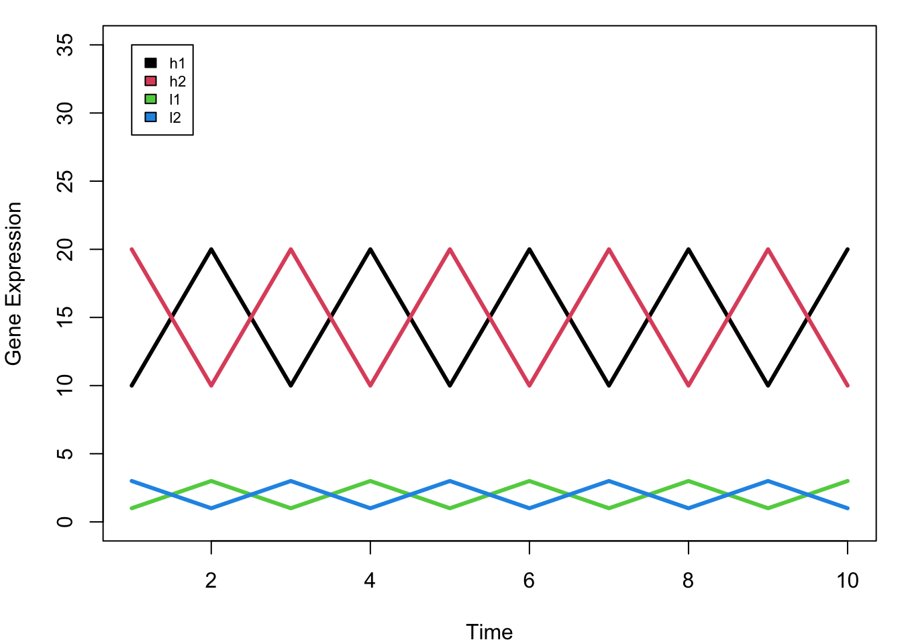
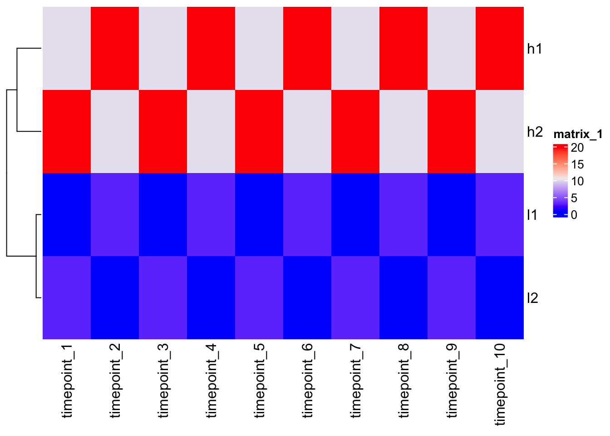
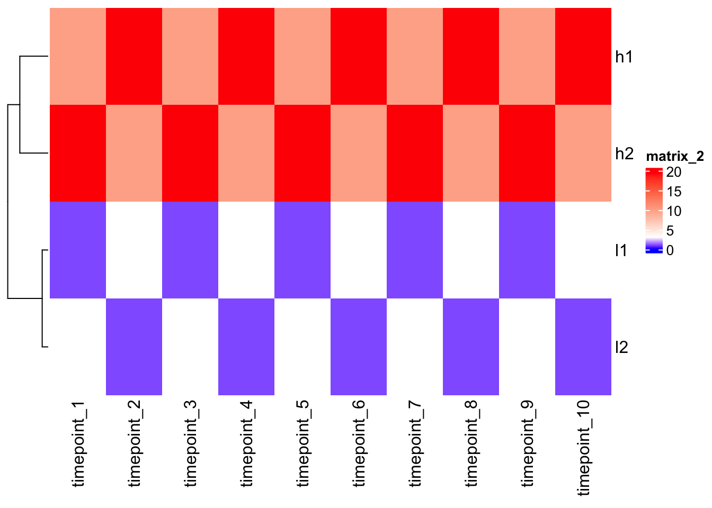
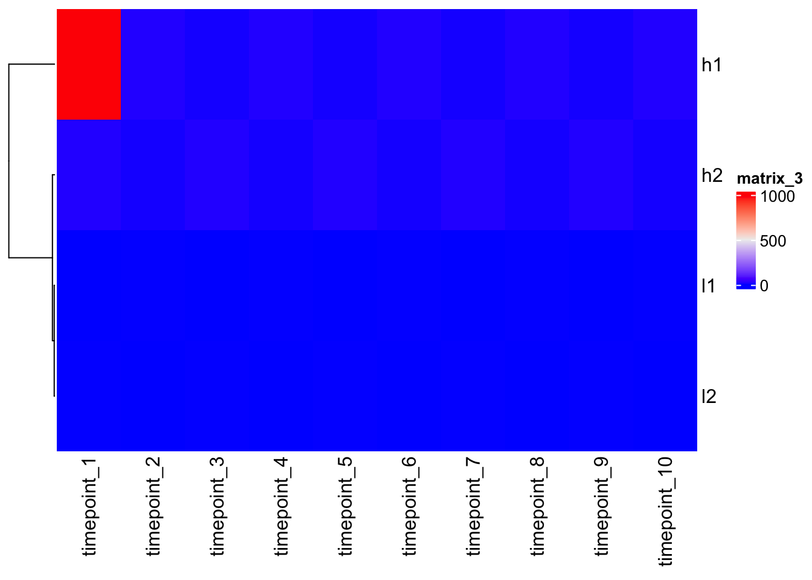
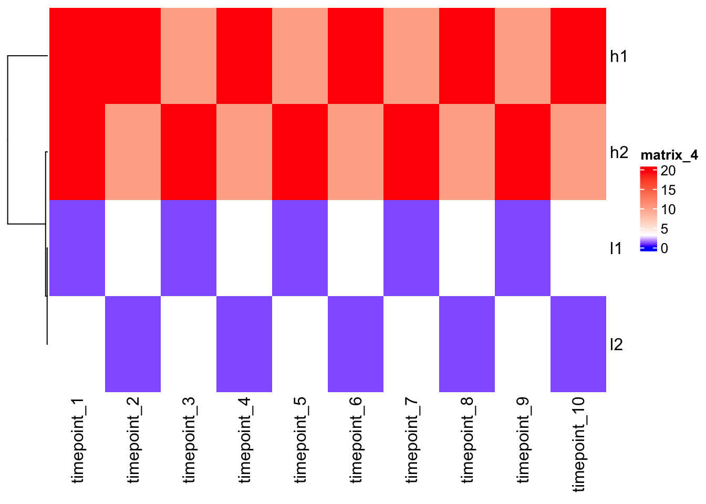
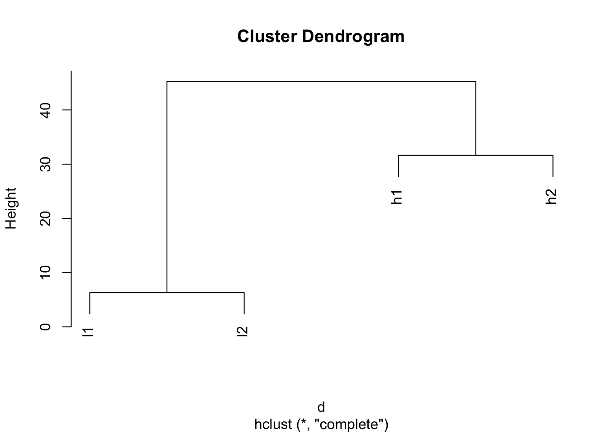
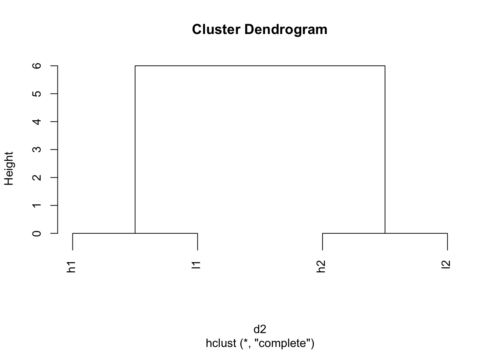

install.packages("BiocManager")
BiocManager::install(version = "3.16")
BiocManager::install("ComplexHeatmap")ComplexHeatmap
Tutorial with Tommy
R Markdown
This is an R Markdown document. Markdown is a simple formatting syntax for authoring HTML, PDF, and MS Word documents. For more details on using R Markdown see http://rmarkdown.rstudio.com.
First time setup
Load the library
library(ComplexHeatmap)Make dummy data
h1 <- c(10,20,10,20,10,20,10,20,10,20)
h2 <- c(20,10,20,10,20,10,20,10,20,10)
l1 <- c(1,3,1,3,1,3,1,3,1,3)
l2 <- c(3,1,3,1,3,1,3,1,3,1)
mat <- rbind(h1,h2,l1,l2)
colnames(mat) <- paste0("timepoint_", 1:10)
mat timepoint_1 timepoint_2 timepoint_3 timepoint_4 timepoint_5 timepoint_6
h1 10 20 10 20 10 20
h2 20 10 20 10 20 10
l1 1 3 1 3 1 3
l2 3 1 3 1 3 1
timepoint_7 timepoint_8 timepoint_9 timepoint_10
h1 10 20 10 20
h2 20 10 20 10
l1 1 3 1 3
l2 3 1 3 1Visualize the data
par(mfrow = c(1,1), mar = c(4,4,1,1))
plot(1:10, rep(0,10), ylim = c(0,35), pch = "", xlab = "Time", ylab = "Gene Expression")
for (i in 1:nrow(mat)) {
lines(1:10, mat[i,], lwd = 3, col = i)
}
legend(1,35,rownames(mat), 1:4, cex = 0.7)
Making a heatmap is easy!
Don’t cluster the columns (auto-setting); genes are in column -> cluster false.
Heatmap(mat, cluster_columns = F)
quantile(mat, c(0, 0.1, 0.5, 0.9)) 0% 10% 50% 90%
1.0 1.0 6.5 20.0 Change color mapping
Color interpolation will be helpful.
col_fun <- circlize::colorRamp2(c(0, 3, 20), c("blue", "white", "red"))
Heatmap(mat, cluster_columns = F, col = col_fun)
Outlier
Outliers can nullify heatmaps misleading colors. Set the correct colors range-scale.
mat2 <- mat
mat2[1,1] <- 1000
Heatmap(mat2, cluster_columns = F)
Heatmap(mat2, cluster_columns = F, col = col_fun)
Scaling
Let’s scale the data/gene expression level across columns (time points) first = scale the same gene over the time.
N.B. scale() works on columns -> double t().
scaled_mat <- t(scale(t(mat)))
scaled_mat timepoint_1 timepoint_2 timepoint_3 timepoint_4 timepoint_5 timepoint_6
h1 -0.9486833 0.9486833 -0.9486833 0.9486833 -0.9486833 0.9486833
h2 0.9486833 -0.9486833 0.9486833 -0.9486833 0.9486833 -0.9486833
l1 -0.9486833 0.9486833 -0.9486833 0.9486833 -0.9486833 0.9486833
l2 0.9486833 -0.9486833 0.9486833 -0.9486833 0.9486833 -0.9486833
timepoint_7 timepoint_8 timepoint_9 timepoint_10
h1 -0.9486833 0.9486833 -0.9486833 0.9486833
h2 0.9486833 -0.9486833 0.9486833 -0.9486833
l1 -0.9486833 0.9486833 -0.9486833 0.9486833
l2 0.9486833 -0.9486833 0.9486833 -0.9486833
attr(,"scaled:center")
h1 h2 l1 l2
15 15 2 2
attr(,"scaled:scale")
h1 h2 l1 l2
5.270463 5.270463 1.054093 1.054093 Heatmap(scaled_mat, cluster_columns = F)
Note - after scaling, h1 and l1, as h2 and l2, are close each other!
Understanding clustering?
In order to understand heatmap you need to understand clustering.
In order to cluster different rows or different columns together you first have to define distance between the rows or the columns -> dist() = distance matrix (euclidian distance) = pair-wise [2D plane d=sqrt{(x2-x1)^2 + (y2-y1)^2} ].
| c1 | c2 | c3 | |
|---|---|---|---|
| r1 | x | ||
| r2 | x | x | |
| r3 | x | x | x |
N.B. There are different distance methods used in different scenarios.
Then you do the clustering.
N.B. Different methods of hierarchical clustering.
- define distance
?dist
d <- dist(mat)
d h1 h2 l1
h2 31.622777
l1 43.011626 45.276926
l2 45.276926 43.011626 6.324555- do clustering and plot
?hclust
hclust(d)
Call:
hclust(d = d)
Cluster method : complete
Distance : euclidean
Number of objects: 4 plot(hclust(d))
Look after scaling.
d2 <- dist(scaled_mat)
plot(hclust(d2))
Take home message
- Color mapping is critical
- Scaling is critical
- Making heatmap is easy, but better to understand the details
?Heatmap